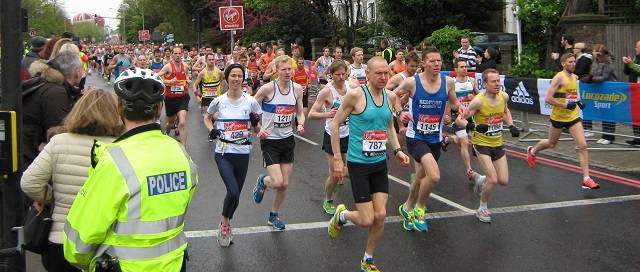

Keith Dowson was 31st M50 as he led home the five Sevenoaks AC runners in the 2015 London Marathon on 26th April. Keith recorded 2:51 to post an impressive 81.6 WMA score in the club GP. James Beeston was also inside three hours while Jane Morgan was inside four hours. And John Stevens was sixteen minutes quicker than at Brighton two weeks ago as the splits of the SAC runners revealed plenty of fine steady running. The SAC results were as follows:
| Place overall | Place gender | Place category | Name | Club | Runner no | Category | HALF | FINISH |
| 851 | 824 | 31 | Dowson, Keith (GBR) | Sevenoaks AC | 30343 | 50-54 | 01:24:08 | 02:51:04 |
| 1101 | 1062 | 237 | Beeston, James (GBR) | Sevenoaks AC | 31639 | 40-44 | 01:26:39 | 02:54:26 |
| 3404 | 3130 | 244 | Stevens, John (GBR) | Sevenoaks AC | 22419 | 50-54 | 01:35:51 | 03:13:20 |
| 13612 | 3017 | 1700 | Morgan, Jane (GBR) | Sevenoaks AC | 11909 | 18-39 | 01:56:27 | 03:58:56 |
| 25116 | 17520 | 2449 | Nicholson, Stephen Peter (GBR) | Sevenoaks AC | 54133 | 45-49 | 02:13:02 | 04:43:28 |
| 34741 | 12614 | 879 | Aitken, Maryanne (GBR) | Sevenoaks AC | 54370 | 50-54 | 03:01:34 | 05:50:59 |
The full results are here.
